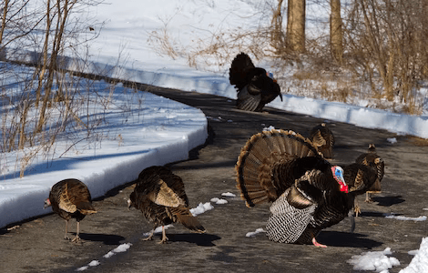
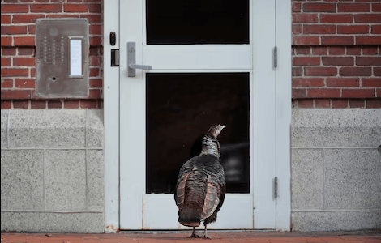

NATIONAL GEOGRAPHIC
Wild turkeys are at a record high in New England but not all are thankful.
ANIMAL
- 
- 
In 1975, the biologist for New Hampshire Fish and Game released 25 turkeys from the back of his truck in Walpole, a town in the western part of the state. It was part of a reintroduction effort to bring back a species that had been wiped out in New England before the Civil War, thanks to a one-two punch of vanishing forests and unchecked hunting.
“Originally, I never thought it would get beyond a few thousand turkeys,” says Walski, who spent nearly 50 years working with the birds before retiring in 2019.
Instead, New Hampshire’s turkey population has exploded beyond all expectations , and now hovers around 45,000 animals the highest since reintroduction, and probably the most the state can handle. Reintroduction efforts in neighboring states and around the country have created a similar story there are 70,000 wild turkeys in Maine, up to 50,000 in Vermont, and more than 30,000 in Massachusetts all of which totals up to about six million animals reproducing in every state but Alaska.
So what made the wild turkey one of the most successful wildlife reintroduction programs in American history? Most likely, it’s due to the bird’s surprising and unexpected ability to live among humans. In the suburbs, turkeys can take advantage of edge habitat, like woods and open spaces, and dine on a never ending buffet of food provided by people—particularly birdseed. It doesn’t hurt that native predators, such as wolves and cougars, have also largely disappeared from most parts of the turkey’s range.
How turkeys came back
In 1634, William Wood noted the abundance of turkeys in his book “New Englands Prospect,” writing that “sometimes there will be forty, three score, and a hundred in a flocke, sometimes more and sometimes lesse.” According to Wood, unregulated hunters in the 17th century might kill 10 or 18 turkeys a day, a practice that essentially doomed the northeastern populations.
In the 1960s and 1970s, many U.S. states reintroduced turkeys back into their native habitat, where the omnivores play a vital role of keeping several plant and invertebrate populations in check. Walski captured his original 25 birds from the Allegheny Mountains on the New York-Pennsylvania border, releasing them along the fertile Connecticut River Valley, on the border with Vermont.
Initially, Walski targeted farmlands because there was evidence that turkeys needed to supplement their diet—nuts and acorns—with farm foods, such as manure and discarded corn, in the winter
Yet apparently turkeys were tougher than thought, as they have continued to thrive despite a massive decline in New Hampshire dairy farms—from more than 600 in 1975 to under a hundred today.
Much of their survival is due to backyard birdfeeders, he says. “When you’ve got a couple of feet of snow in the middle of the winter, that’s their salvation," Walski says.
Comments :
- john Very good
- john Very good
Leave a Reply
Your email address will not be published. Required fields are marked*
Related posts:
-
'Hispanic' 'Latino' Here’s where the terms come from
Choosing the term Hispanic or Latino as a source of identity is more complicated than just applying a label. A person whose grandparents came from Spain, a person with Indigenous Mexican heritage, and someone
View article -
How Martin Luther King, Jr.’s multifaceted view on human rights still inspires today
The Reverend Martin Luther King, Jr. towers over history as a civil rights legend known for leading the movement to end segregation and counter prejudice against Black Americans in the 1950s and 1960s, largely through peaceful protests.
View article -
Struggle for voting rights continues 58 years after historic March on Washington
Terry G. Collins is no stranger to peaceful protest. The Birmingham, Alabama native visited churches with his parents as a child where civil rights leaders talked about challenging injustices. In 1963, at 15 years old, he was subject
View article